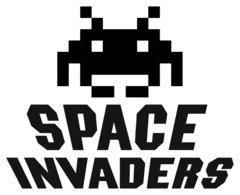
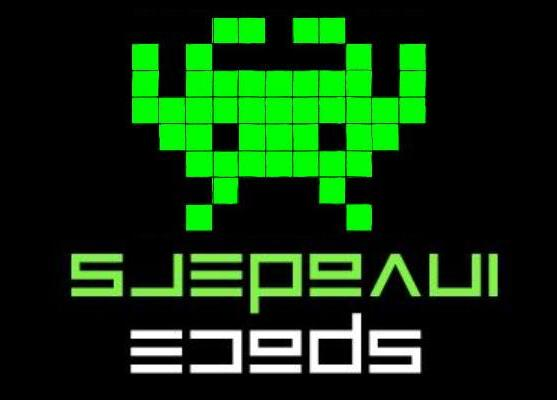
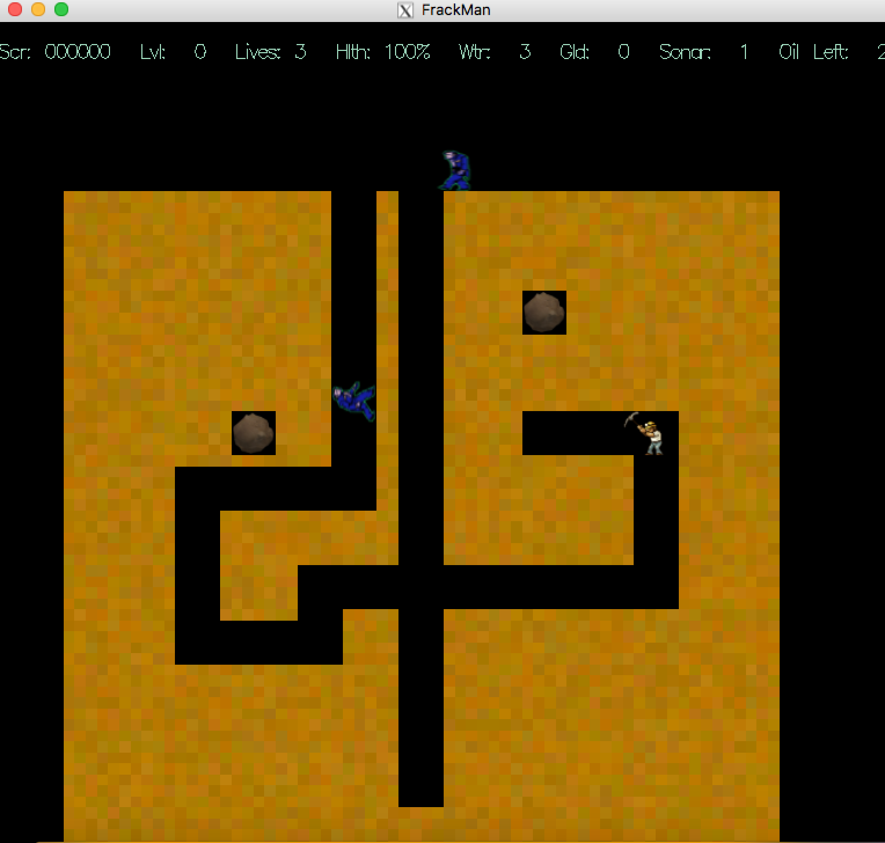
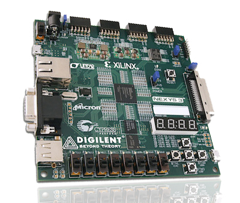
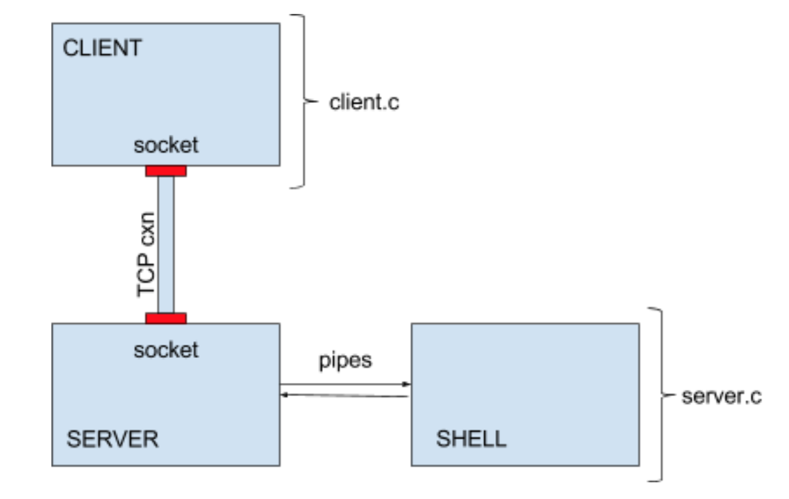

|
ELFIN |

Space Invaders |

SpaceInflators |

FrackMan |
|

Space Invaders (FPGA) |
Client/Server Program |
IoT Security System |
Position: Lead Software Engineer
Platform: MPLAB
PIC Microcontrollers: PIC18, PIC24
Languages: Embedded-C, Python
Period: Feb. 2017 - Oct. 2017
Description:
I am currently working with a team of UCLA faculty and students with the goal of building UCLA's first satellite. It is exciting to note that the ELFIN Project is being joint-funded by the National Aeronautics and Space Administration (NASA), the Aerospace Corporation, and the National Science Foundation (NSF). This is UCLA's first CubeSat Project, with the mission of studying the loss of relativistic electrons in Earth's radiation belt. ELFIN consists of several subsytems, and I am currently the lead of the Command and Data Handling (CNDH) subsystem. I am responsible for all of the flight software, and to develop specifically for ELFIN's Flight Computer (FC), Attitude Determination and Control Board (ACB), the ACB's Peripheral Controller Board (PCB), and the Ground Software Equipment (GSE), in addition to overseeing and providing guidance to the other members of the CNDH team. Moreover, I lead the CNDH meetings, and work closely with the other subsystems to design the software to meet the scientific needs of the mission.
As a member of the CNDH team, I have established a full duplex Universal Aysnchronous Receiver/Trasmitter (UART) serial connection between the ACB and the PCB. In addition, I have implemented the majority of the PCB's functionality, which takes place in its execution handler, and consists of reading and writing data to and from the PC to its memory map and the ACB (among other functions). Moreover, I have developed spin control algorithms for the spin-stabilized satellite, which allows ELFIN to determine its attitude via the magnetometer (MRM) data received from the PCB and maintain it to control its spin vectors and orbital path.
Platform: Xcode
Languages: C++
Graphics and Audio: OpenGL and irrKlang
Period: September 2017
Description:
I tried to recreate the classic 2D arcade game: Space Invaders. Previously, I had worked on a couple of other projects related to Space Invaders, which included an FPGA version, as well as a knockoff Space Invaders game called Space Inflators. For this project, I worked with the OpenGL graphics library, as well as the irrKlang audio library to try to create a clone of the original game. The game consists of a player spaceship, as well as five rows of eleven invaders (of varying sizes and images), and one flying saucer (or UFO). As in the original game, the objective is for the player to destroy all 55 of the invaders (with a laser) before the invaders cross the invasion line. The invaders shoot lasers as well (as they move down the screen towards the player) in a random fashion. Occassionally, the flying saucer flies across the top of the screen, and each successful attempt by the player to destroy the flying saucer, results in extra points for the player score. The player has three lives, and after destroying 55 aliens, a new round of invaders takes the screen to try to invader planet Earth. As the player advances through the rounds, the invaders start lower and lower on the screen, with each ten rounds, the invaders reset to their original height.
I implemented Space Invaders in C++, and utilizing the OpenGL and irrKlang libraries. I designed the game utilizing a class-based approach for each of the in-game objects, with varying levels of inheritance and class derivation. Currently, I have yet to implement the barriers within the game, but otherwise, the game is relatively complete (in comparision to the original).
Platform: Xcode
Languages: C++
Period: Aug. 2017
Description:
SpaceInflators is a 2D video game similar to the classic arcade game “Space Invaders.” As I had thoroughly enjoyed implementing the FrackMan video game, I decided that I wanted to implement another “knockoff” classic arcade game, and decided to take a shot at SpaceInflators. As with FrackMan, the framework was provided by the same professor, but all of the contents within the gameplay and the algorithms were developed and implemented by myself. Similar to Space Invaders, the player controls a spaceship, and is Earth's last line of defense against an advancing alien onslaught. The objective of the game is to destroy all of the alien spaceships for a given round, without being destroyed by the alien spaceships, to advance to the next round. The player spaceship is able to move up, down, left, and right, and can fire two types of projectiles; bullets and torpedoes (which inflict much more damage than bullets). In addition, there are three types of alien spaceships: Nachlings, Wealthy Nachlings, and Smallbots. Each of these alien classes exhibit different movement control algorithms, but all fire projectiles with the hopes of destroying the player’s spaceship, and finally conquering planet Earth. Certain alien spaceships drop pickup-able items, which can be used to either give the player spaceship an extra live, torpedo ammunition, or fully replenish the spaceship’s energy shields. Good luck! And welcome to Earth!
This game involved the implementation of a large set of classes to represent each of the in-game objects (i.e. actors). The StudentWorld class serves as the world, in which all of the in-game objects belong to (i.e the space field). The actors consist of the player spaceship, the enemies (i.e. Nachlings, Wealthy Nachlings, and Smallbots), pickupable goodies (i.e. free lives, energy boosts, and torpedo ammunition), projectiles (i.e. bullets and torpedoes), and lastly, stars, which add to the design of the space field. Implementing all of these classes involved strategically creating a certain set of base classes, and the corresponding derived classes to exploit similarities in both functionality and private variables. Moreover, this project involved implementing an in-game timing mechanism (based off of a frequency determined by the game framework), in which objects interact and do specific actions on each tick of the game clock.
Platform: Xcode
Languages: C++
Period: Feb. 2016 - March 2016
Description:
FrackMan is a 2D video game similar to the classic arcade game "Dig Dug." It was created as a project for my Data Structures (and OOP) course, CS32, at UCLA. The framework was provided by the professor, but all of the contents of the game, and all of the interactions of the objects with one another were all designed and implemented by myself. The objective of the game is for the player (i.e. FrackMan) to navigate through the dirt in the oil field to find all of the oil barrels for the given level. There are a certain number of enemies (i.e. protesters) each level, who attempt to make FrackMan stop mining for oil by continuously shouting at him (if they are within shouting range). There are two types of protesters: the regular protester and the hardcore protester. The FrackMan player can pick up gold nuggets, which can be placed down as bribes to distract the protesters. If a regular protester picks up a gold nugget, he will immediately leave the oil field and stop bothering the FrackMan. If a hardcore protester picks up a gold nugget, he will stand and admire the gold nugget for a given duration before continuing his pursuit of the FrackMan. The FrackMan player can also pick up pools of water, which serve as ammo to his squirt gun. If a protester takes a certain amount of damage from the squirt gun (note that the hardcore protester has more than double the life of the regular protester), he will leave the oil field in bitter defeat. In addition, the FrackMan player can pick up sonar kits, which can be used to illuminate all objects that can be picked up in a given radius (i.e. gold nuggets and oil barrels). Moreover, the FrackMan can use boulders within the oil field to his advantage by strategically timing his route tunneling through the dirt, so that it will fall on a protester. If the FrackMan player is hit by a boulder, he will be instantly killed. Similarly, if a protester is hit by a boulder, he will proceed to leave the oil field. Lastly, the hardcore protester has a special ability that the regular protester does not have. If the hardcore protester is within a certain radius of the FrackMan player (even if he does not have a direct line of sight of the FrackMan), he can use the FrackMan's GPS signal to hone in on his location and track him down. Finally, the player starts the game with three lives, and every time the player gains an additional score of 100,000 points, an extra live is rewarded. Enjoy! And happy mining!!
This game involved the implementation of a large set of classes to represent each of the in-game objects (i.e. actors). The StudentWorld class serves as the world, in which all of the in-game objects belong to (i.e the oil field). The actors consist of the player (FrackMan), the enemies (regular and hardcore protesters), pickupable goodies (gold nuggets, oil barrels, pools of water, and sonar kits), obstacles (dirt and boulders), and the FrackMan's squirt gun ammunition (water squirts). Implementing all of these classes involved strategically creating a certain set of base classes, and the corresponding derived classes to exploit similarities in both functionality and private variables. Moreover, this project involved implementing an in-game timing mechanism (based off of a frequency determined by the game framework), in which objects interact and do specific actions on each tick of the game clock. Lastly, implementation of the protester classes involved implementing a Queue-Based Maze-Searching Algorithm in the form of a Depth-First Search in order for the protesters to find the exit point of the oil field upon being killed, and for the hardcore protesters, honing in on the FrackMan's location.
Platform: Xilinx ISE
FPGA Board: Nexys-3 Spartan-6
Languages: Verilog
Period: June 2017
Description:
For this project, I decided to recreate the classic arcade game, Space Invaders. For those not familiar with the game, the goal is for the player spaceship to destroy 55 alien spaceships by shooting them with lasers before they reach the bottom of the screen, while trying to avoid the alien lasers. Here is a link to play the original game.
This version is a simplified version of the game due to on-board memory constraint issues, and only having two weeks to work on the project. I noticed that as more objects were added to the game (i.e. more objects on the VGA display), the game began to act in an undefined manner (i.e. some alien objects stopped moving, or moved out of sync of the other alien objects, or the lasers began to glitch). I figured that this was due to FPGA board memory constraints (which is what the TA told me as well). I intend to complete the game using off-board memory and utilizing the MCB and MIG.

Platform: Xcode
Languages: C
Period: April 2017 - May 2017
Description:
Created a multi-process program (consisting of a client, server, and shell) that operates similar to the Telnet protocol by allowing the client to communicate with the server process. This is achieved via the TCP protocol, in which the client is able to send a byte stream of data to the server, which execs and transfers the data to the shell process, in which the shell process outputs the data back to the client process via pipe redirection.
In addition, the program builds on the client/server connection by adding a layer of encryption to encrypt the communication between the two processes. This was achieved by utilizing the libmcrypt data encryption library. On the command-line, the encryption option can be invoked by adding the --encrypt option, and setting it equal to the my.key file (which was the encryption key that I created). Moreover, the program allows for a transcript of the client/server connection to be saved to a log file by adding the --log option. This log records the commands input by the client process, as well as the output provided by the shell process.
Platform: Intel Edison using the Grove Sensor Kit
Languages: C
Period: May 2017
Description:
The goal of this project was to implement a simple IoT system using the Intel Edison (and various Grove Kit sensors) to unlock a door by sending a username/password string to a server, and receiving back authentication. Initially, the program was achieved using a single light sensor, which was used to encode a binary value to generate a 4-digit password. Moreover, the username was hardcoded into the program. This password was sent as plaintext to the server, and a plaintext response from the server (i.e. a YES or NO) was received by the Edison. Obviously, this simple implementation had serious security flaws such as the short password, and the unencrypted transmission of data to and from the server. This would make the client/server connection susceptible to a number of enemy attacks such as brute-force, dictionary, and rainbow attacks (for the weak password), and man-in-the-middle and replay attacks (due to the lack of encrypted data).
A more secure implementation was developed to combat these security flaws. First of all, the password was increased to 8-digits, and instead of just having a binary value for each of the digits, each digit could have 8 possible values (ranging from 0-7). While still not as strong as it could be, this password length and characteristics served its purpose for this assignment. In addition, instead of a hard-coded username, a user of this IoT system could provide their own ID string. The strengthened password helped to protect against several of the attacks mentioned above, but other security measures were taken in the form of a timeout after a certain number of incorrect password attempts took place. After three failed attempts, the server would stop accepting messages from the Edison for a five minute period. This timeout would help to deter brute-force and dictionary attacks as an attacker couldn't just enter in an unlimited amount of attempts to crack the password. While the timeout helps in this regard, it is of importance to note that the actual method to input the password (i.e. the use of light sensors and a push button) would already serve to prevent the use of bots to perform the dictionary attacks for an attacker. Lastly, to prevent against man-in-the-middle and replay attacks, the program encrypted the data on the client (and server side) using the Open SSL APIs. In this way, the data would be encrypted going to the server and upon receiving the reply from the server, further strengthening the IoT system.